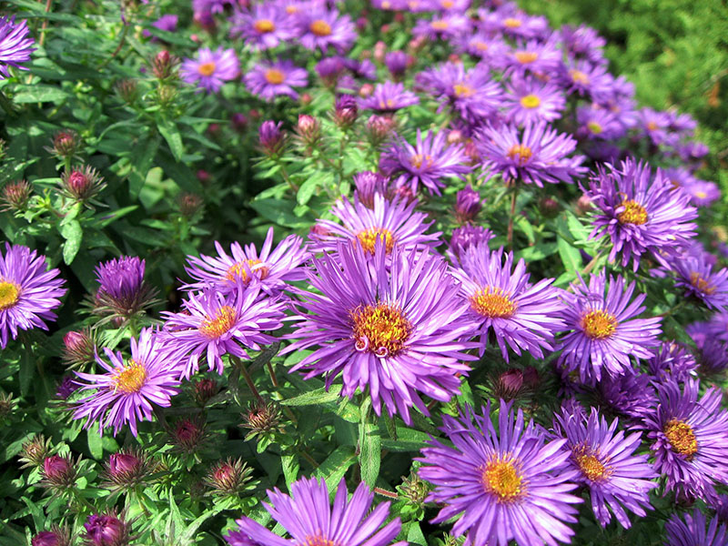
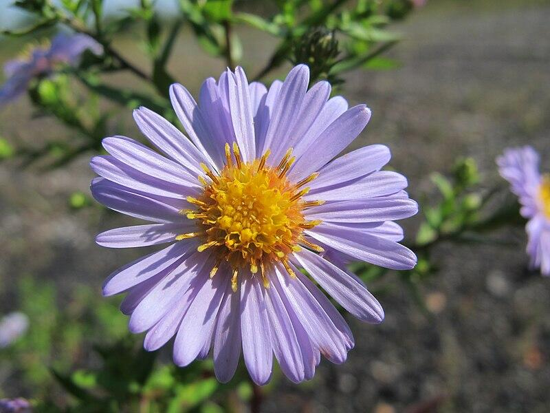
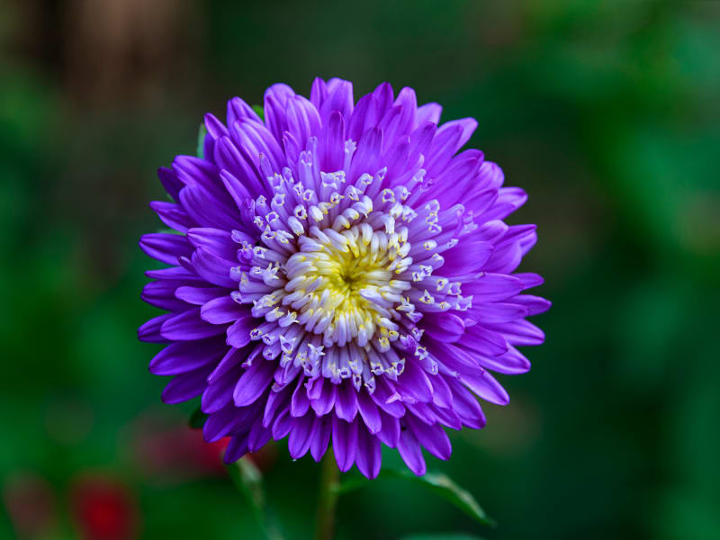
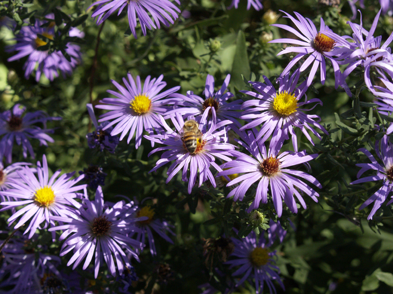

Meaning: Anticipation
Origin
The aster’s association with daintiness most likely comes from its appearance. The many long and slender petals delicately surround a bright, yellow center: a tiny masterpiece in a field of blooms.
Gallery



